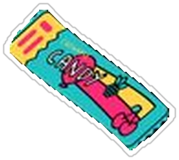

Hello 👋
Welcome to Sama Studios
サマ · スタジオ
Right nowInterning · Audit & AccountingOpen to accounting & bookkeeping roles
Next upOfficiating starts Oct 31Youth & amateur baseball · Houston area
Latest highlightStarted at Gifted & Talented Kid’s AcademyAudit & Accounting Intern · Oct 2026
🪪 About me
Joshua Aidan Dotson
Political Science Student · University of Houston
📍 Atascocita, TX
Political Science student at UH (Class of 2029) pursuing accounting coursework and Intuit-certified bookkeeper. I'm interning in audit & accounting, officiate baseball on weekends, and spent four years at Crust Pizza Co. growing from team lead to corporate manager running POS rollouts across 30+ stores. I like clean books, clear processes, and teams that run on time.
⭐ Résumé highlights
- 🏢Corporate Manager at 19Crust Pizza Co. · POS systems across 30+ locations
- 📊Audit & Accounting InternGifted & Talented Kid’s Academy · Oct 2026 – now
- 🎓Political Science, BA · UHExpected May 2029
- ✅Intuit Bookkeeping CertifiedCertification
- 🇩🇪U.S. DoD Student InternDefense Commissary Agency · Wiesbaden, Germany
- ⚾Contracted Athletic OfficialYouth & amateur baseball · Houston